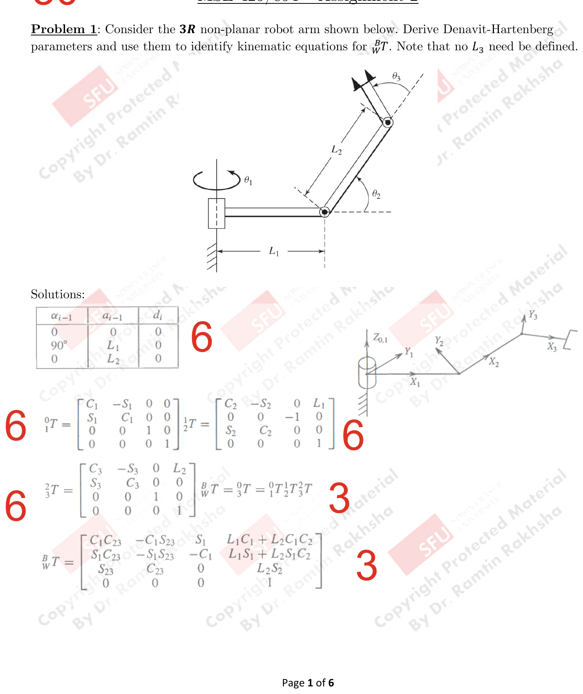
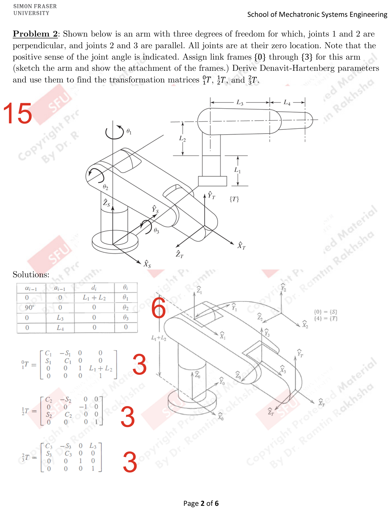
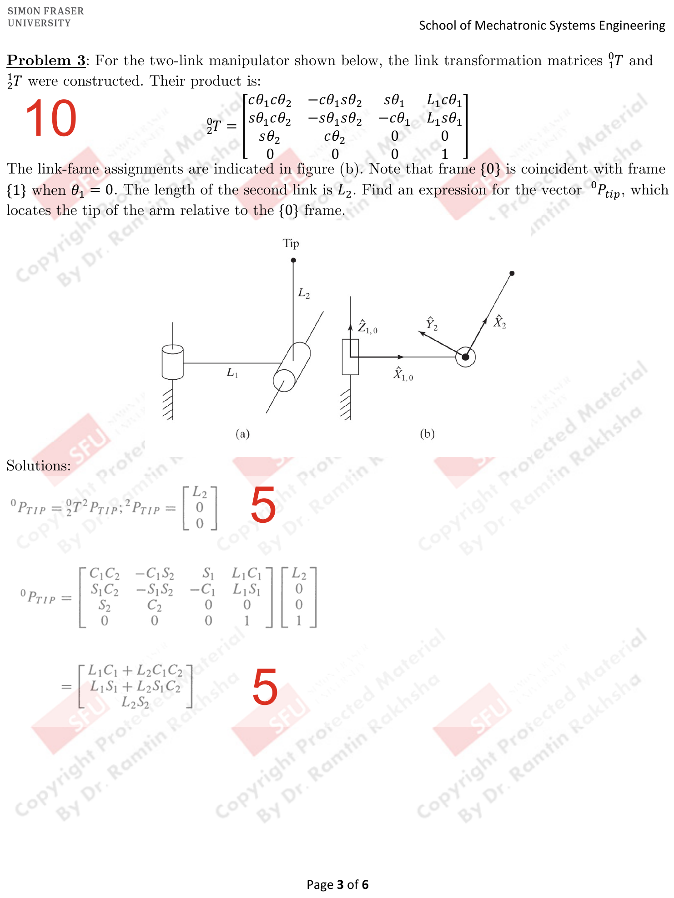
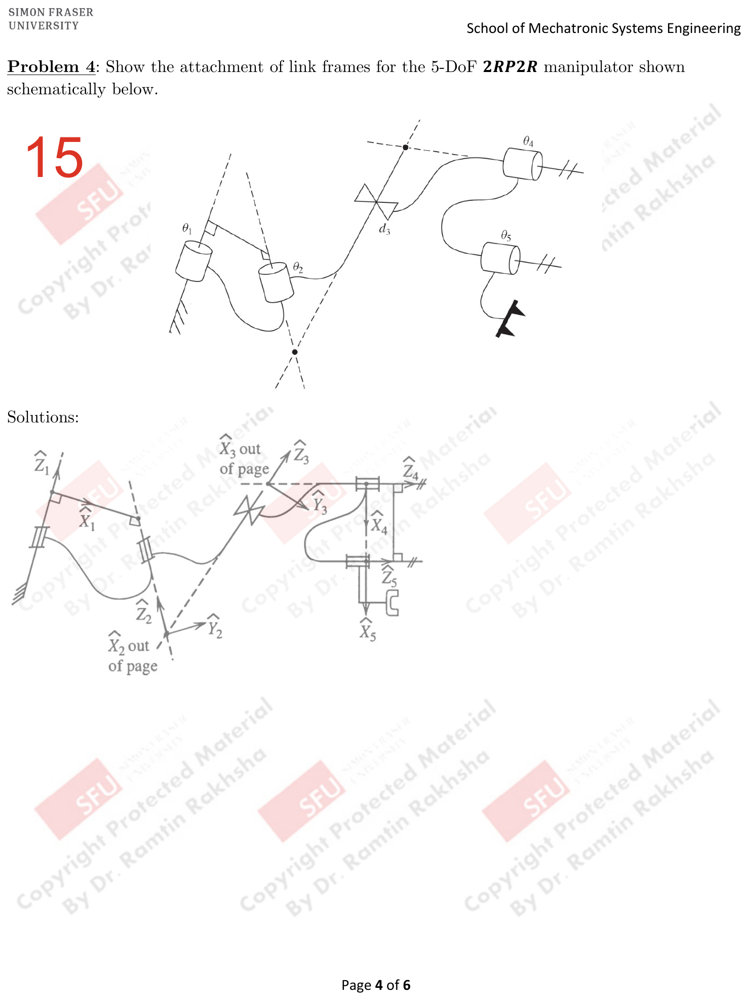
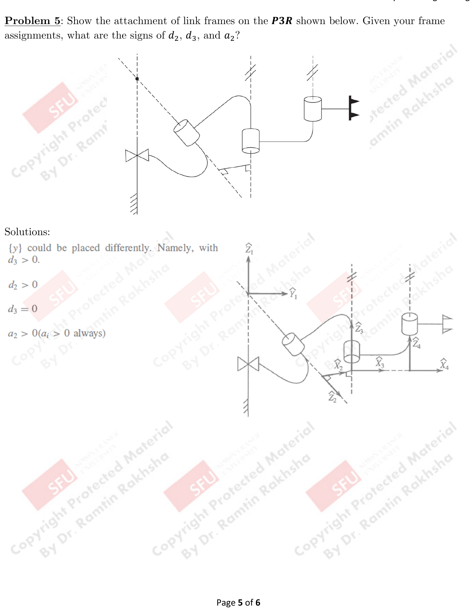
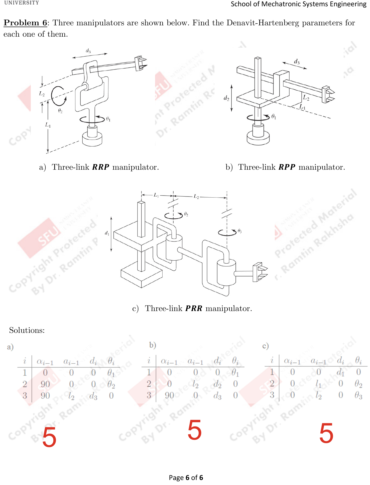

Assignment 2 Solutions
PDF p.1Problem 1
PDF p.1 30 marksConsider the 3R non-planar robot arm shown below. Derive Denavit-Hartenberg parameters and use them to identify kinematic equations for ${}^{0}_{3}T$. Note that no $L_3$ need be defined.

Step 1: DH Parameter Table [6 marks]
| $i-1$ | $\alpha_{i-1}$ | $a_{i-1}$ | $\theta_i$ | $d_i$ | $i$ |
|---|---|---|---|---|---|
| 0 | 0 | 0 | $\theta_1$ | 0 | 1 |
| 1 | $90°$ | 0 | $\theta_2$ | 0 | 2 |
| 2 | 0 | $L_1$ | $\theta_3$ | 0 | 3 |
Step 2: Individual Transformation Matrices
${}^{0}_{1}T$: [6 marks]
$${}^{0}_{1}T = \begin{bmatrix} c_1 & -s_1 & 0 & 0 \\ s_1 & c_1 & 0 & 0 \\ 0 & 0 & 1 & 0 \\ 0 & 0 & 0 & 1 \end{bmatrix}$$${}^{1}_{2}T$: [6 marks]
$${}^{1}_{2}T = \begin{bmatrix} c_2 & -s_2 & 0 & L_1 \\ 0 & 0 & -1 & 0 \\ s_2 & c_2 & 0 & 0 \\ 0 & 0 & 0 & 1 \end{bmatrix}$$${}^{2}_{3}T$: [6 marks]
$${}^{2}_{3}T = \begin{bmatrix} c_3 & -s_3 & 0 & L_2 \\ s_3 & c_3 & 0 & 0 \\ 0 & 0 & 1 & 0 \\ 0 & 0 & 0 & 1 \end{bmatrix}$$Step 3: Overall Transformation [3 + 3 marks]
${}^{0}_{3}T = {}^{0}_{1}T \; {}^{1}_{2}T \; {}^{2}_{3}T$:
$${}^{0}_{3}T = \begin{bmatrix} c_1 c_{23} & -c_1 s_{23} & -s_1 & L_1 c_1 + L_2 c_1 c_2 \\ s_1 c_{23} & -s_1 s_{23} & c_1 & L_1 s_1 + L_2 s_1 c_2 \\ s_{23} & c_{23} & 0 & 0 \\ 0 & 0 & 0 & 1 \end{bmatrix}$$where $c_{23} = \cos(\theta_2 + \theta_3)$ and $s_{23} = \sin(\theta_2 + \theta_3)$.
Answer: The DH parameters and resulting transformation matrix ${}^{0}_{3}T$ are shown above.
Problem 2
PDF p.2 15 marksShown below is an arm with three degrees of freedom for which joints 1 and 2 are perpendicular, and joints 2 and 3 are parallel. All joints are at their zero location. Note that the positive sense of the joint angle is indicated. Assign link frames $\{0\}$ through $\{3\}$ for this arm (sketch the arm and show the attachment of the frames.) Derive Denavit-Hartenberg parameters and use them to find the transformation matrices ${}^{0}_{1}T$, ${}^{1}_{2}T$, and ${}^{2}_{3}T$.

Step 1: DH Parameter Table [6 marks frame + 6 marks table]
| $i-1$ | $\alpha_{i-1}$ | $a_{i-1}$ | $\theta_i$ | $d_i$ | $i$ |
|---|---|---|---|---|---|
| 0 | 0 | 0 | $\theta_1$ | $L_1 + L_2$ | 1 |
| 1 | $90°$ | 0 | $\theta_2$ | 0 | 2 |
| 2 | 0 | $L_3$ | $\theta_3$ | 0 | 3 |
Step 2: Individual Transformation Matrices
${}^{0}_{1}T$: [3 marks]
$${}^{0}_{1}T = \begin{bmatrix} c_1 & -s_1 & 0 & 0 \\ s_1 & c_1 & 0 & 0 \\ 0 & 0 & 1 & L_1 + L_2 \\ 0 & 0 & 0 & 1 \end{bmatrix}$$${}^{1}_{2}T$: [3 marks]
$${}^{1}_{2}T = \begin{bmatrix} c_2 & -s_2 & 0 & 0 \\ 0 & 0 & -1 & 0 \\ s_2 & c_2 & 0 & 0 \\ 0 & 0 & 0 & 1 \end{bmatrix}$$${}^{2}_{3}T$: [3 marks]
$${}^{2}_{3}T = \begin{bmatrix} c_3 & -s_3 & 0 & L_3 \\ s_3 & c_3 & 0 & 0 \\ 0 & 0 & 1 & 0 \\ 0 & 0 & 0 & 1 \end{bmatrix}$$Answer: The DH parameters and three transformation matrices are shown above.
Problem 3
PDF p.3 10 marksFor the two-link manipulator shown below, the link transformation matrices ${}^{0}_{1}T$ and ${}^{1}_{2}T$ were constructed. Their product is:
$${}^{0}_{2}T = \begin{bmatrix} c\theta_1 c\theta_2 & -c\theta_1 s\theta_2 & s\theta_1 & L_1 c\theta_1 \\ s\theta_1 c\theta_2 & -s\theta_1 s\theta_2 & -c\theta_1 & L_1 s\theta_1 \\ s\theta_2 & c\theta_2 & 0 & 0 \\ 0 & 0 & 0 & 1 \end{bmatrix}$$The link-frame assignments are indicated in figure (b). Note that frame $\{0\}$ is coincident with frame $\{1\}$ when $\theta_1 = 0$. The length of the second link is $L_2$. Find an expression for the vector ${}^{0}P_{tip}$, which locates the tip of the arm relative to the $\{0\}$ frame.

Step 1: Tip position in frame $\{2\}$ [5 marks]
The position of the tip in frame $\{2\}$ is simply the length $L_2$ along the $\hat{X}_2$ axis:
$${}^{2}P_{tip} = \begin{bmatrix} L_2 \\ 0 \\ 0 \end{bmatrix}$$Step 2: Transform to frame $\{0\}$ [5 marks]
$${}^{0}P_{tip} = {}^{0}_{2}T \; {}^{2}P_{tip} = \begin{bmatrix} c\theta_1 c\theta_2 & -c\theta_1 s\theta_2 & s\theta_1 & L_1 c\theta_1 \\ s\theta_1 c\theta_2 & -s\theta_1 s\theta_2 & -c\theta_1 & L_1 s\theta_1 \\ s\theta_2 & c\theta_2 & 0 & 0 \\ 0 & 0 & 0 & 1 \end{bmatrix} \begin{bmatrix} L_2 \\ 0 \\ 0 \\ 1 \end{bmatrix}$$Answer:
$${}^{0}P_{tip} = \begin{bmatrix} L_1 \cos\theta_1 + L_2 \cos\theta_1 \cos\theta_2 \\ L_1 \sin\theta_1 + L_2 \sin\theta_1 \cos\theta_2 \\ L_2 \sin\theta_2 \end{bmatrix}$$Problem 4
PDF p.4 15 marksShow the attachment of link frames for the 5-DoF 2RP2R manipulator shown schematically below.

Frame Assignments [15 marks]
Assign DH frames following the Denavit-Hartenberg convention:
- Frame $\{0\}$: At the base. $\hat{Z}_0$ along Joint 1 axis of rotation.
- Frame $\{1\}$: At Joint 2. $\hat{Z}_1$ along Joint 2 axis. $\hat{X}_1$ along common normal from $\hat{Z}_0$ to $\hat{Z}_1$. Note: $\hat{X}_1$ points out of the page.
- Frame $\{2\}$: At Joint 3 (prismatic). $\hat{Z}_2$ along the sliding direction. $\hat{X}_2$ points out of the page.
- Frame $\{3\}$: At Joint 4. $\hat{Z}_3$ along Joint 4 axis.
- Frame $\{4\}$: At Joint 5. $\hat{Z}_4$ along Joint 5 axis.
- Frame $\{5\}$: At the end-effector.
Answer: The frame assignments follow DH convention with $\hat{Z}_i$ along joint $i+1$ axis and $\hat{X}_i$ along the common normal from $\hat{Z}_{i-1}$ to $\hat{Z}_i$. See diagram in solution PDF.
Problem 5
PDF p.5 15 marksShow the attachment of link frames on the P3R shown below. Given your frame assignments, what are the signs of $d_2$, $d_3$, and $a_2$?

Frame Assignments and Parameter Signs [15 marks]
Assign DH frames following convention. With the shown assignment:
- $d_2 > 0$
- $d_3 = 0$
- $a_2 > 0$ ($a_2$ is always positive by convention)
Answer: $d_2 > 0$, $d_3 = 0$, $a_2 > 0$ (always positive).
Problem 6
PDF p.6 15 marks (5 each)Three manipulators are shown below. Find the Denavit-Hartenberg parameters for each one of them.
- a) Three-link RRP manipulator
- b) Three-link RPP manipulator
- c) Three-link PRR manipulator

a) Three-link RRP manipulator [5 marks]
| $i$ | $\alpha_{i-1}$ | $a_{i-1}$ | $\theta_i$ | $d_i$ |
|---|---|---|---|---|
| 1 | 0 | 0 | $\theta_1$ | 0 |
| 2 | $90°$ | 0 | $\theta_2$ | 0 |
| 3 | $90°$ | 0 | 0 | $d_3$ |
b) Three-link RPP manipulator [5 marks]
| $i$ | $\alpha_{i-1}$ | $a_{i-1}$ | $\theta_i$ | $d_i$ |
|---|---|---|---|---|
| 1 | 0 | 0 | $\theta_1$ | 0 |
| 2 | $90°$ | 0 | 0 | $d_2$ |
| 3 | 0 | 0 | 0 | $d_3$ |
c) Three-link PRR manipulator [5 marks]
| $i$ | $\alpha_{i-1}$ | $a_{i-1}$ | $\theta_i$ | $d_i$ |
|---|---|---|---|---|
| 1 | 0 | 0 | 0 | $d_1$ |
| 2 | 0 | $L_1$ | $\theta_2$ | 0 |
| 3 | 0 | 0 | $\theta_3$ | 0 |
Answer: The DH parameter tables for all three manipulators are shown above.